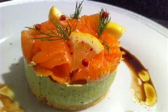
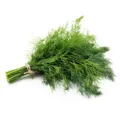
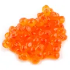
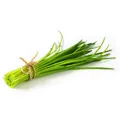

Romain SIEURIN
Cuisiner c'est la vie !
Novembre 2022
Mousse d'avocat et de saumon pour l'apéro

INGRÉDIENTS POUR 30 pièces

D'aneth

Oeufs de saumon

Ciboulette
PRÉPARATION
Mixer tous les ingrédients ensemble.
Cette préparation peut être servie accompagnée d'oeufs de
saumon
et/ou de
brins d'aneth
ou de
ciboulette
sur des toasts ailés et en verrine.
ALTERNATIVE VIDEO